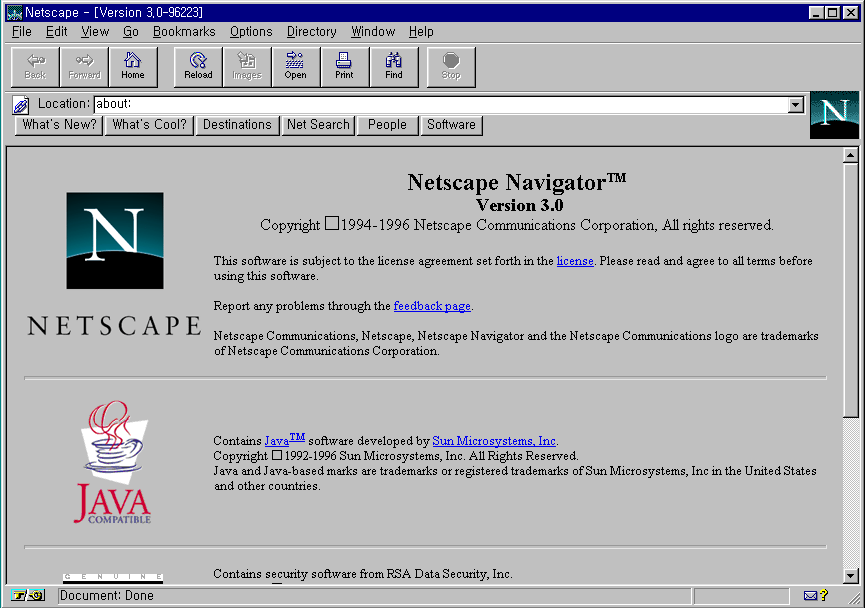

Internet betyder ett nätverk av nätverk. De tidiga nätverk var uppdelade i mindre nätverk som inte kommunicerade med varandra. Bland de första var ARPANET som utvecklades av USA:s militära forskningsanstalt Advanced Research Projects Agency. Efter att flera olika nätverk skapades i olika delar av världen, och i och med att kommunikation mellan nätverken blev standardiserad med Internet Protocol Suite (TCP/IP) anslöts alla dessa nätverk vilket bildade ett nätverk av nätverk. Internet har många användningsområden, exempelvis IRC, e-post, fildelning med FTP och World Wide Web.
Idag används Internet och World Wide Web synonymt med varandra, eftersom under 1990-talet började allt fler använda internet på grund av World Wide Web.
World Wide Web, även kallad för WWW, webben, nätet eller felaktigt för internet, är ett regelverk för att överföra hypertext dokument. Skaparen av World Wide Web är engelsmannen Tim Berners-Lee och han skapade World Wide Web när han jobbade i CERN mellan 1989 och 1991. World Wide Web använder sig av Hypertext Transfer Protocol (HTTP) för att leverera Hypertext Markup Language dokument (HTML). Tidiga webbläsare för HTML dokument inkluderar Mosaic och Lynx, men Netscape var den största webbläsaren under 1990-talet. När Microsoft inbakade Internet Explorer i Windows blev Microsofts webbläsare snabbt den mest använda webbläsaren i världen. Under 2000-talet uppkom flera olika webbläsare som konkurerade mot Internet Explorer, bland annat Mozillas Firefox webbläsare som reste sig ur askan från Netscape, Apples egna WebKit baserade webbläsare Safari och slutligen Googles webbläsare Chromium/Chrome.
Detta är en bild på webbläsaren Netscape i Windows 95

Idag finns det tre grenar av webbläsare. I ordning av popularitet är de:Hypertext Markup Language är ett regelverk för hur hypertext dokument ska skrivas. Hypertext är mer känt på nätet som länkar som leder till andra dokument eller stycken i dokument. Strukturen i HTML dokument bestäms av själva skaparen med olika taggar som beskriver dokumentet. Dessa taggar tolkas av användares webbläsare för att presenteras. Eftersom många skapare vill själva välja hur dokumentet presenteras brukar Cascading Style Sheets (CSS) användas som en stilmall för dokumentet. Eventuellt används också Javascript för att skapa interraktiva och dynamiska webbsidor.
Under de tidiga åren av HTML tolkade webbläsare HTML dokumenten på olika sätt, vilket har orsakat stora problem med att webbutvecklare får sina hemsidor att se ut likadant för alla. Detta ledde till World Wide Web Consortium (W3C) skapade olika tekniska specifikationer för hur HTML och CSS, bland andra dokument, bör användas och tillämpas. Idag är vi på det femte versionen av HTML (HTML5), samt den tredje versionen av CSS (CSS3).
Här kommer en lista av vanliga taggar i ett HTML dokument.
Cascading Style Sheets är en teknik som används för att ändra på presentationsstilen i HTML dokument. Detta är inkluderar bland annat färger, typsnitt, teckenstorlek, position, centrering, med flera. Tekniken är till för att homogenisera hemsidor utifrån olika faktorer som val av webbläsare, storlek på skärmar, installerade typsnitt, osv. En CSS-mall kan används av flera hemsidor och en hemsida kan använda sig av fler mallar vid behov. Detta kan liknas med en "huvudmall" som används för alla hemsidor och en "lokal mall" som används för några (men inte alla) hemsidor.
CSS har utvecklats med åren: